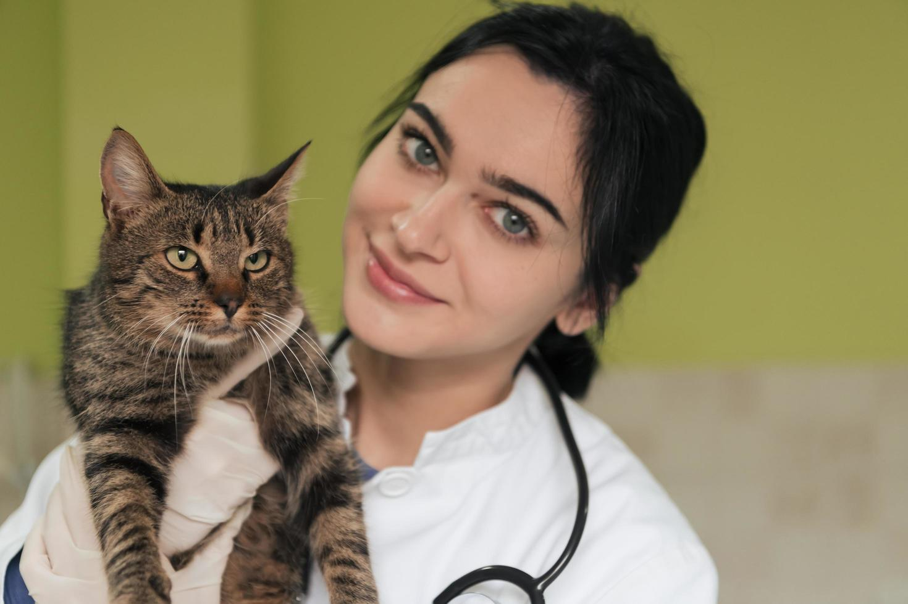
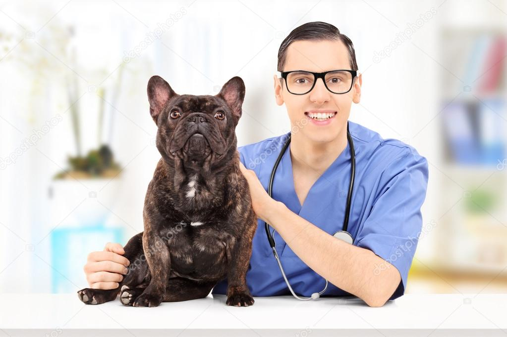
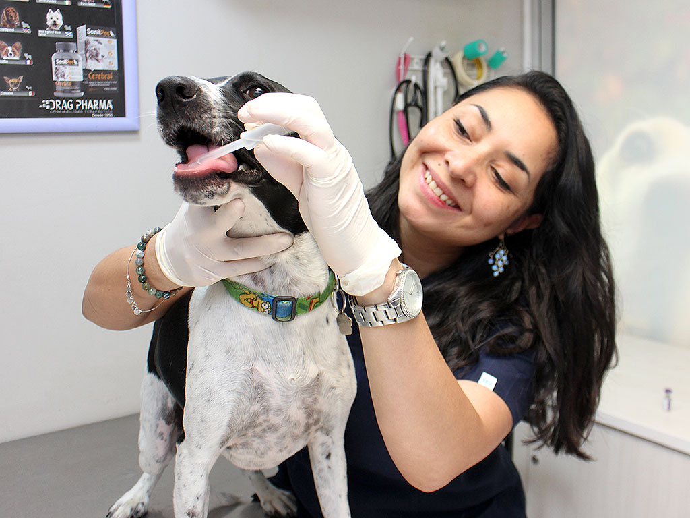
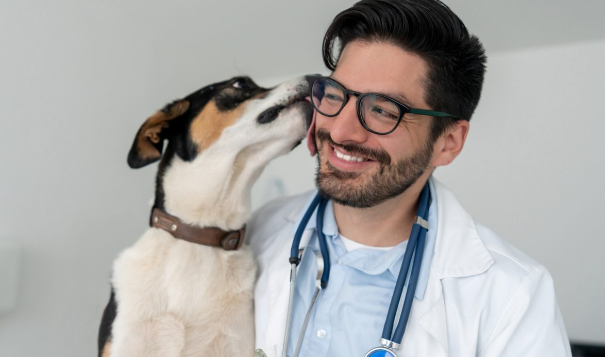

Quiénes somos
Veterinaria San Marcos nació en 2009 en Rancagua, Región del Libertador General Bernardo O'Higgins, con la idea de ofrecer una atención cercana y de calidad para las mascotas de la ciudad. Hoy atendemos un promedio de 25 pacientes al día: principalmente perros y gatos, aunque también recibimos conejos y aves.
Nuestros servicios van desde la consulta general y la vacunación hasta cirugías menores, desparasitación y control de peso, siempre pensando en el bienestar a largo plazo de cada paciente.
Nuestro equipo
Contamos con 3 médicos veterinarios, 1 técnico veterinario y 1 recepcionista dedicada a coordinar tu atención.
-

María Soto
Médica veterinaria, directora clínica
-

Rodrigo Pérez
Médico veterinario, cirugía
-

Camila Reyes
Médica veterinaria, medicina interna
-

Felipe Muñoz
Técnico veterinario
-
Daniela Rojas
Recepcionista
Áreas de atención
- Consultas y controles
- Vacunación
- Cirugía menor
- Desparasitación
- Exámenes de apoyo diagnóstico
- Otros cuidados